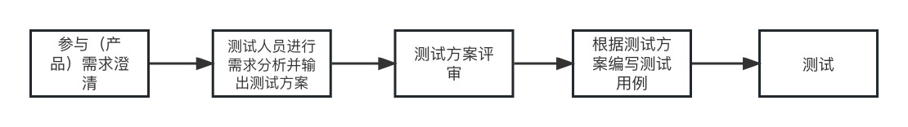

Reading together:python测试之道
一起啃书，虽然软件行业各项技术的更新迭代非常快，但是该学的基础还是得学，该啃的书还是得啃。
地基不打好，万丈高楼就容易倒塌。
文章不会百分百叙述书中的内容，算是自己学习总结
简述测试基础
测试(人员)的几个阶段：入门--->工程师--->专家--->总监
入门阶：
人人都是测试工程师，入门阶段的测试人员不需要掌握过多的计算机基础技术，只需要像用户一样对系统做各种操作，如果出现不符合预期的结果，则被认为是系统存在的bug。这就是功能测试。也是黑盒测试：只关注外部结构，不考虑内部逻辑结构，主要针对软件界面和软件功能进行测试。
入门阶的测试人员除了需要理解功能测试的基本概念之外，还需要掌握亮点：
1. 及早介入测试的重要性
随着项目一个阶段一个阶段的延伸，越到后期修复bug的代价越大。
从需求分析阶段进入就是最好的时间点。这也是为什么大公司大都要求测试人员在一个版本周期中遵照这样的流程和工作内容：

2. 测试活动贯穿整个软件生命周期
3. 测试流程
测试项目流程图

整个项目涉及的文档如下：
- 测试计划文档
- 测试需求文档
- 测试用例文档
4. 测试执行阶段

bug管理流程图：
工程师阶
知其然已经无法满足当今的测试人员，还要知其所以然。所以测试人员不仅仅要关注系统外部结构，还得了解系统内部的逻辑结构，需要把系统拆分成膜快，模块拆成单元进行更细致的测试。进行模块级别的拆分后，再把各种部件归纳组合，尽可能多地去遍历测试点，以保证系统的可靠性和稳定性。
可以将测试类型和方法从三个维度进行划分。
按项目开发阶段来分
1. 单元测试
2. 集成测试
3. 系统测试
4. 验收测试
按测试执行的类型来分
1. 功能测试
2. 自动化测试
3. 性能测试
4. 安全性测试
按测试技术的不同来分
1. 黑盒测试
2. 白盒测试
3. 灰盒测试
python环境准备+python基础
这个类目暂时不打算在这里做详细的赘述，参考blog中python基础语法
接口测试基础
模拟网络请求
接口测试
UnitTest测试框架
接口自动化测试
接口自动化测试实战
接口并发测试
接口并发测试实战
Jenkins持续集成
Python的其他用途
本博客所有文章除特别声明外，均采用 CC BY-NC-SA 4.0 许可协议。转载请注明来自 柒仔的学习栈！